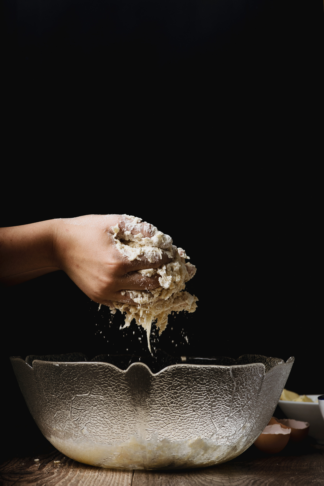

mini flourless chocolate cookie
John
Bakery
It’s thanks to Christina’s chocolate chip cookie recipe that I discovered the wonders of this one special ingredient that makes all the difference.Milk Powder!Have you ever used powdered milk in chocolate chip cookies or any cookies for that matter?Before coming across Christina’s recipe, it had never occurred to me to use milk powder in anything except my California Emergency Earthquake Preparedness Kit. Milk powder, also called powdered milk, keeps forever in the pantry (which is why it’s so good in emergency kits). Even once the package is opened, milk powder will keep for several months if kept in an airtight container.
But nibbling on the first cookie in the batch, I was amazed by the subtle caramel flavor and slightly chewy texture it gave her chocolate chip cookies.Right then and there, I decided that milk powder deserved a spot in more of my cookie recipes — and particularly my signature chocolate chip cookies!Aside from the milk powder, this is a pretty straightforward adaptation of the Toll House chocolate chip cookie recipe — though I daresay I’ve managed to make a few improvements on the classic.
This chocolate chip cookie recipe makes cookies that are absolutely irresistible on the day they are made: the edges are buttery and crispy, the middles are soft and chewy, and the chocolate chips are perfectly semi-melty.
Chocolate chip recipe
- Preheat oven to 350 degrees F (175 degrees C).
- Cream together the butter, white sugar, and brown sugar until smooth. Beat in the eggs one at a time, then stir in the vanilla. Dissolve baking soda in hot water. Add to batter along with salt. Stir in flour, chocolate chips, and nuts. Drop by large spoonfuls onto ungreased pans. Watch Now
- Bake for about 10 minutes in the preheated oven, or until edges are nicely browned. Watch Now
If you can’t change the world with chocolate chip cookies, how can you change the world?
By Pat Murphy
The recipe calls for just half a cup of added sweetener in the form of honey and either coconut sugar or brown sugar.Coconut sugar has gained interest for having a slightly lower glycemic index than standard sugar, but it is more expensive than brown sugar. Both options are perfectly acceptable, particularly since you don’t need much.Because the cake is so moist and flavorful all on its own, no frosting is needed. As a result, this is a cake to satisfy that “chocolate tooth” without jacking up your blood sugar in the same way a more classic cake might.
A GLUTEN-FREE AND GRAIN-FREE CHOCOLATE CAKE
Because the recipe uses almond flour, these cakes qualify as 100 percent gluten-free. They’re also paleo-friendly as long as you swap in an appropriate chocolate, such as Lily’s or Hu brand.For your vegan friends, this isn’t the best bet, since the recipe calls for eggs.
One of the magical upsides to these cakes is that they’re delicious warm from the oven and just as good later that day or the next. If you do want to make them ahead, just wedge them from the cupcake tin and store in a covered container. Any leftovers will hold up well stored in the fridge for several days.And yes, these mini cakes are absolutely freezer-friendly. Once completely cool, wrap a layer of plastic wrap around each cake and stow in a resealable freezer bag. To defrost, unwrap and leave at room temperature for a few hours.